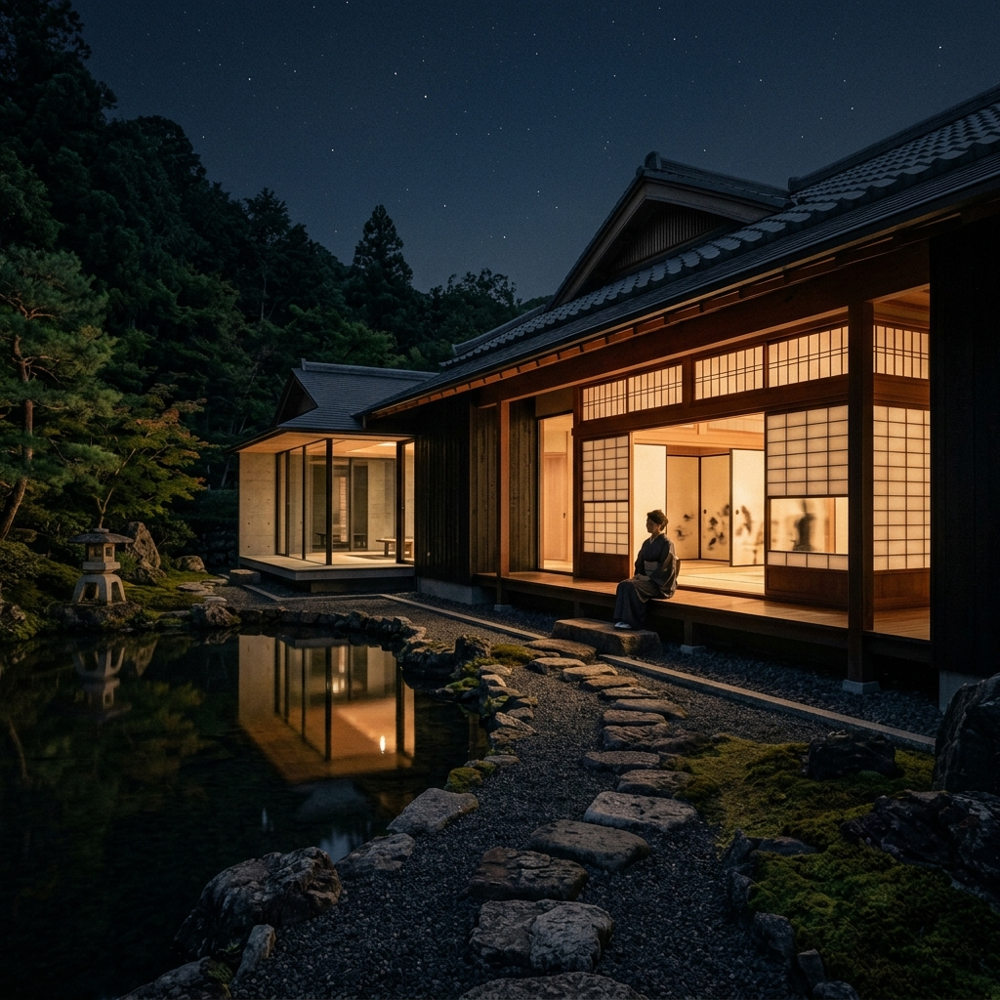
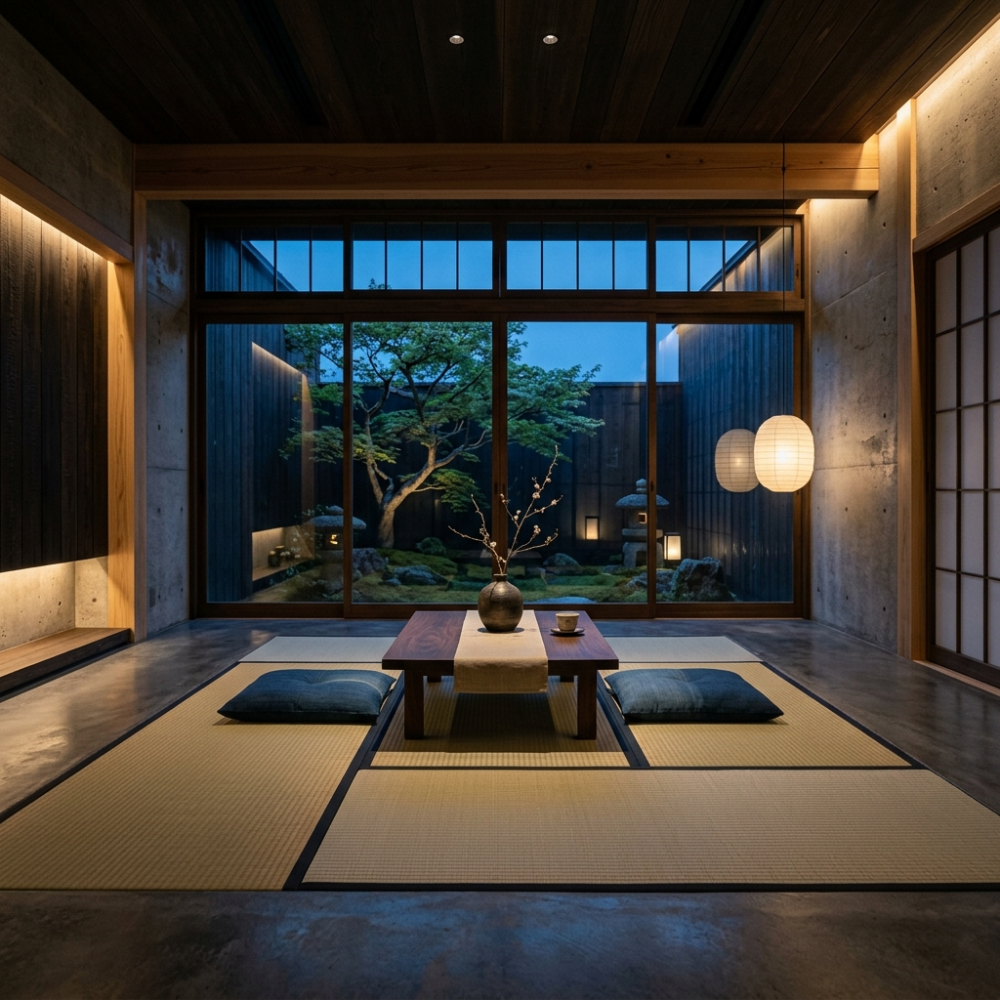
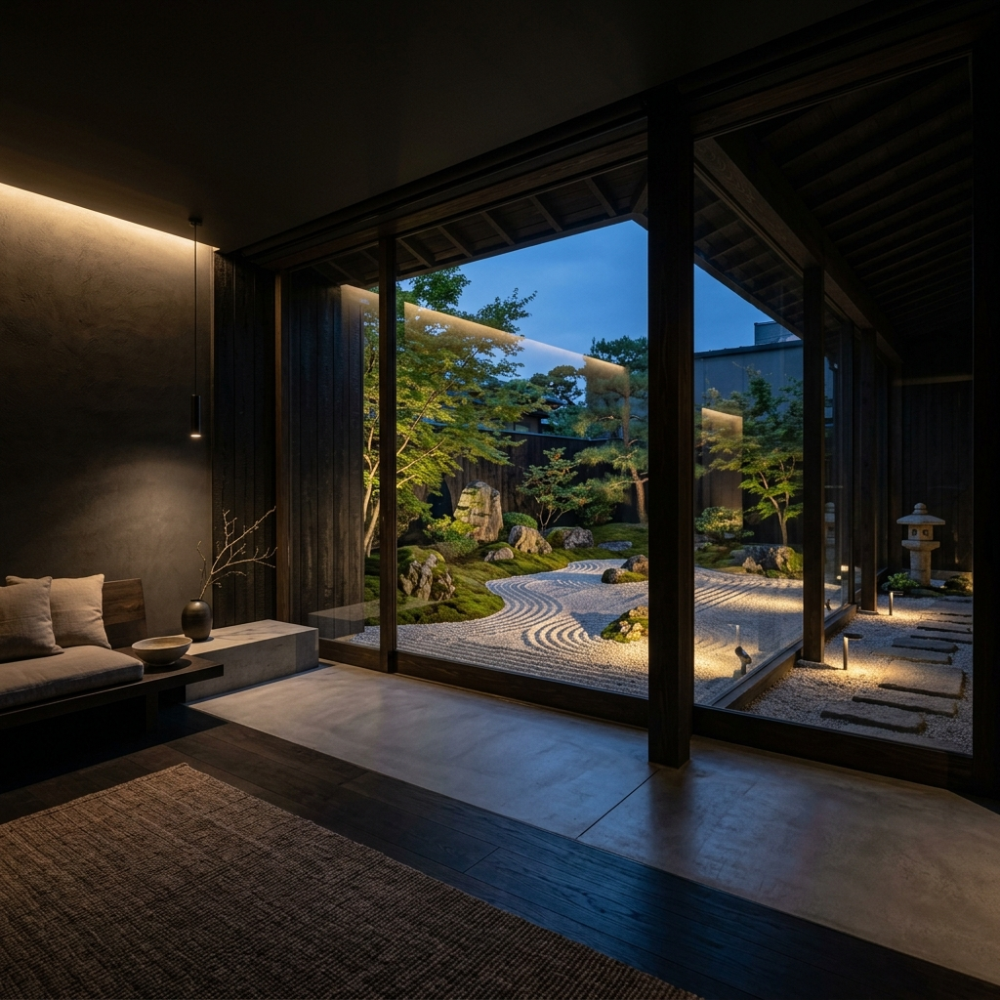

伝統の静寂と、空間OSの融合。
洛におけるすべての邸宅は、物理的な壁という概念を持ちません。
備え付けられた空間認識AIと連動するスマート・インショウジ（電子障子）が、居住者の精神状態と外光に合わせてシームレスに透光率を統制。和の重厚な静けさと、未来の居住体験がここで交差します。


邸宅全体が、見えないAIの網の目で覆われています。居住者の体温、呼吸、視線の先。そのすべてを感知し、無音のままに最適な「間」を構築します。
指先一つのジェスチャーで、電子襖（ふすま）が透け、借景の庭がライトアップされる。ここに在るのは、伝統的な和と高度な演算が紡ぐ至高の安らぎです。